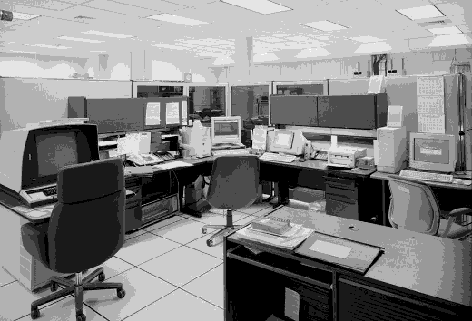

Anomaly Detection and CorrectionAnomaly Detection and Correction
Anomaly Detection and CorrectionAnomaly Detection and Correction

A key function of the FTAA has always been the monitoring of our current era's safety and security. The Anomaly Detection and Correction (AD&C) division ensures that any unexpected intrusion from other eras into the present are monitored and - if necessary - dealt with in a swift manner. Consisting of dedicated analysts, the AD&C division scans data from multiple national and global monitoring stations for incursion events so the public can be warned and remain safe.



Mission | Programs and Operations | Employee Data Storage | Index
Need help? Have a temporal policy question? Email us at ftaaweb@stjc.edu or by phone at (202) 738-9235.
Last Updated: November 18, 1993
This site is best viewed using the NCSA Mosaic WWW browser.